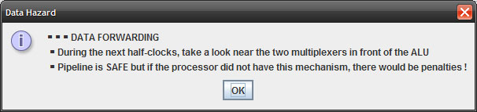
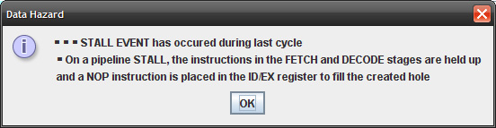
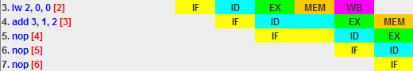
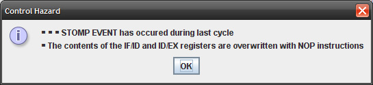
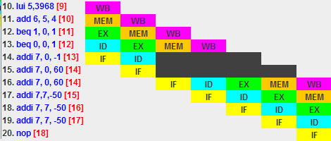

Help Index
RiSC16 Visual Simulator (Pipelined Implementation)
├ Sequence of events
├ Interface Description
└ Pipeline Hazards
A hazard is a potential problem that can happen in a pipelined processor. There are three fundamental types of hazard: data hazards, branching (control) hazards, and structural hazards. Data hazards can be further divided into Write After Read, Write After Write, and Read After Write (RAW) hazards.
In this RiSC16 implementation, only control hazards and data hazards (RAW) may occur.
As you can see on the figures below, a dialog informs when a hazard has occurred. You can deactivate these dialogs in " Display > Alerts ".
Data Hazards
Most RAW data hazards are resolved using data forwarding. When it happens, the following message pops up to inform the user.

If the instruction currently in the execute stage (held in the ID/EX register) is a LW and targets any register that the instruction in decode stage uses as a source register, a STALL event happens. This event causes a penalty of one cycle.


Control Hazards
If the instruction in the execute stage is a BEQ and the condition is true or if the instruction is a JALR,a STOMP event happens. This event causes a penalty of two cycles.


Help Index
RiSC16 Visual Simulator (Pipelined Implementation)
├ Sequence of events
├ Interface Description
└ Pipeline Hazards